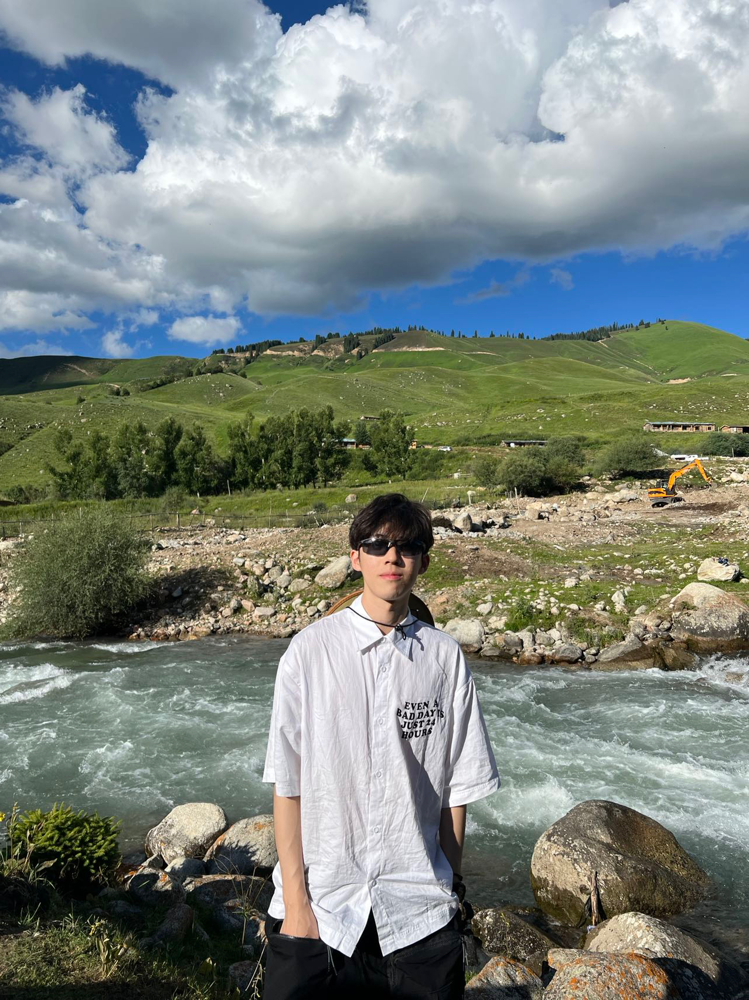

|  | Ph.D. Student |
I'm an second-year Ph.D. student in the School of Intelligence Science and Technology, Peking University.
I am interested in Out-of-Distribution (OOD) problems across various machine learning models and scenarios, including Domain Generalization (DG) in computer vision tasks, graph OOD generalization, and the generalization of large language models (LLMs).
[2019.9 ~ 2023.6]
Ph.D. Candidate in Machine Learning and Computer Vision, School of Intelligence Science and Technology, Peking University (PKU) Advisors: Xianghua Ying , Yisen Wang[2023.9 ~ 2028.9 (expected)]
Can In-context Learning Really Generalize to Out-of-distribution Tasks?
Qixun Wang, Yifei Wang, Yisen Wang, Xianghua Ying
ICLR 2025
[paper]2024
Dissecting the Failure of Invariant Learning on Graphs.
Qixun Wang, Yifei Wang, Yisen Wang, Xianghua Ying
NeurIPS 2024
[pdf] [code]2024
Improving Out-of-distribution Robustness by Adversarial Training with Structured Priors.
Qixun Wang* , Yifei Wang*, Hong Zhu, Yisen Wang
NeurIPS 2022 Spotlight, top 5%
[pdf] [code] [slide]2022
Paper list & notes of LLM & VLM maintained by me [link]
Paper list & notes of OOD Generalization & some other topics maintained by me [link]